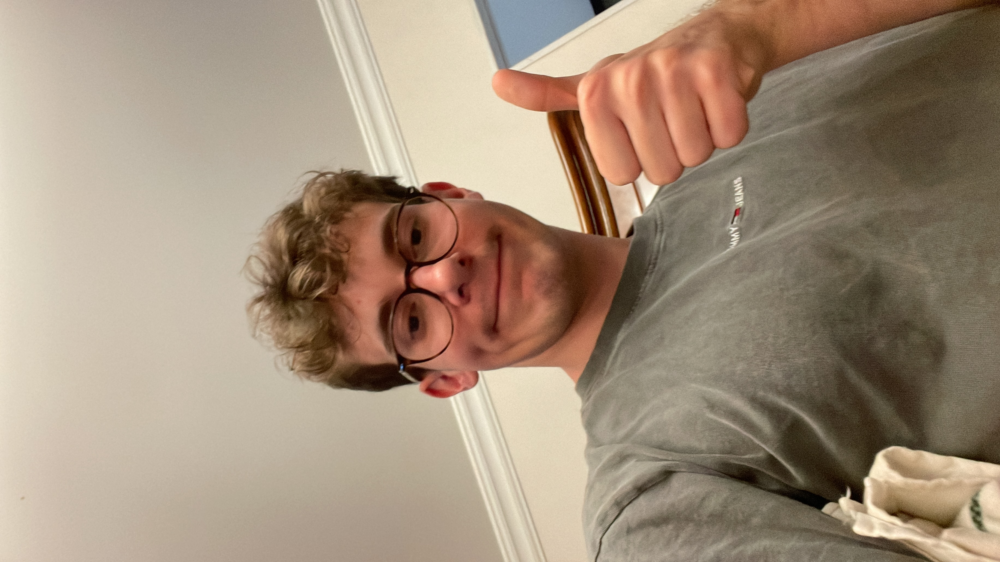
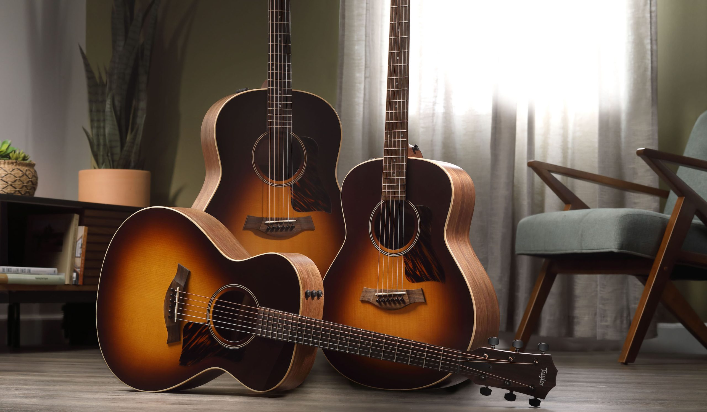
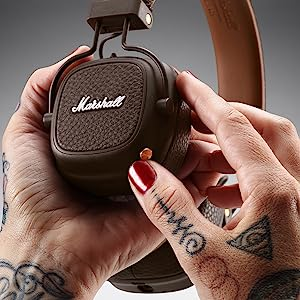

My PROFILE
My name is Maxime Vazzoler, but everybody calls me Max.
I am a BOSC6 student in the English section at Ecole Hôtelière de Lausanne. I am 22 years old from France. I've lived in Singapore for 5 years just prior joining EHL
Below, you'll find the link to a game I like to play in class, after I've completed a good ammount of code of course...
CLICK TO PLAYHOBBIES
In life, I like to play sports like basketball or tennis. I also like to play guitar: I am self taught and I try to play everyday.
PASSIONS
As for passion, I would say that listening and playing music is a daily passion of mine; I cannot spend a day without listenning to anykind of music.
I also really enjoy cooking. My parents love to cook and showed me how it was done when I was young. During weekends or when they invite friends at home for diner, I often help in the kitchen and try to assimilate my dad's receipes and make them my own.